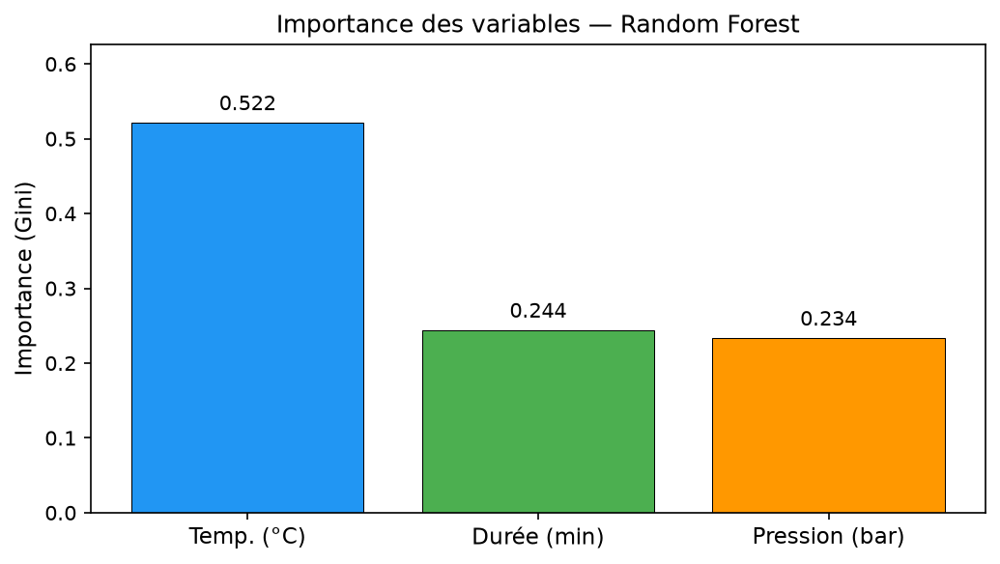

À partir de 3 paramètres machine — durée, température, pression — un modèle classe automatiquement chaque broyage en BON ou MAUVAIS.
Chaque lot est décrit par ses conditions de broyage. Le modèle apprend à reconnaître les combinaisons qui donnent un bon produit — et à signaler celles qui partent en défaut.
Durée (min), température (°C) et pression (bar) relevées pendant la fabrication.
Le modèle s'entraîne sur les lots passés, bons comme mauvais, pour en tirer la règle.
Une prédiction immédiate pour chaque nouveau lot, avant analyse laboratoire.
Chaque sphère est un lot réel, positionné selon ses 3 paramètres. C'est exactement ce que le modèle exploite pour décider. Faites tourner le nuage à la souris.

Le modèle ne se contente pas de prédire : il dit pourquoi. La température est de loin le paramètre le plus discriminant, devant la pression et la durée.
Plusieurs algorithmes ont été testés. Chacun trace une frontière différente entre la zone « bon » et la zone « mauvais ». La surface ci-dessous est cette frontière — tout ce qui est d'un côté est prédit BON, de l'autre MAUVAIS. Changez de méthode pour comparer.
Pour chaque paire de paramètres, la carte montre la probabilité qu'un lot soit BON : vert = forte, rouge = faible. Les contours tracent les seuils 50 %, 70 % et 90 %. D'un coup d'œil, on lit la zone sûre — bien plus parlant qu'une vue 3D.

En croisant les lots BON observés et les deux modèles, on dégage une zone de réglage « sûre » — puis les tendances propres à chaque méthode.
Zone centrale des lots BON (intervalle interquartile observé).
Le RBF dessine une zone « bonne » douce et compacte autour du cœur des lots BON. Revers : il est trop optimiste — il classe une large part de l'espace en BON, donc il laisse plus facilement passer un mauvais lot atypique.
La forêt découpe la zone par seuils nets (typique des arbres), pilotés surtout par la température. Plus prudente sur les bords, c'est elle qui atteint la meilleure précision (85,7 %).
À garder en tête : pris séparément, aucun paramètre ne sépare nettement BON et MAUVAIS (température médiane 48,8 °C contre 49,9 °C — très proche). La zone sûre vient de la combinaison des trois paramètres, et reste imparfaite (~85 % au mieux). À utiliser comme aide à la décision, pas comme garantie.
Une stack 100 % open-source, éprouvée et reproductible — qui tourne en interne. Aucune donnée de production n'est envoyée vers un service ou un cloud externe.
Aller plus loin — une IA de développement en interne : l'analyse elle-même n'utilise aucune IA. En revanche, le développement s'appuie sur des assistants IA, qui peuvent exposer du code ou des données à des services externes. Un projet mené avec une association de CentraleSupélec vise à faire tourner des LLM open-source sur des serveurs Fiabila, pour garder ce travail entièrement en interne — un gage de confidentialité.
Au-delà de la classification BON / MAUVAIS, trois chantiers permettent d'aller plus loin : fiabiliser la conduite, viser l'excellence produit, et enrichir le modèle avec davantage de mesures.
Une conduite régulée et reproductible, sans recours au forçage manuel.
Planifier des essais pour cartographier davantage de points de réglage encore non testés.
Dépasser les 3 paramètres actuels en intégrant de nouveaux capteurs.
Automatiser davantage la machine (Decobecq) pour que les opérateurs n'aient jamais besoin du mode forçage. Au démarrage, le produit est froid : on chauffe fort, donc l'intensité des paramètres est élevée. La conduite se régule ensuite jusqu'à un maintien stable, avant de redescendre en fin de broyage.
Le modèle ne connaît que les zones déjà produites ; de larges parties de l'écran de paramètres n'ont jamais été testées. On planifie donc des essais sur des points inédits — par exemple ~30 °C, ~300 min, ou des durées plus courtes. Cas concret sur la F400 : plutôt que d'affirmer un gain, on le teste à l'échelle réelle, avec un filet de sécurité.
Objectif atteint progressivement, pas dès le départ.
Le modèle n'a appris que sur les lots déjà fabriqués ; il reste aveugle aux réglages jamais essayés. Chaque nouveau point mesuré enrichit la carte.
80 % des lots restent en réglage sûr, 20 % explorent des points inédits. On commence petit (un cran à la fois), on mesure, on valide, puis on élargit. Le risque reste borné.
Donner les « bons paramètres » suppose un modèle F400, donc un historique de lots F400 étiquetés. À confirmer avant de lancer — sinon on le construit d'abord.
Cadre des essais : aucun lot n'est lancé sans réglage validé par le modèle ; les essais restent bornés et progressifs. Un réglage prouvé s'applique ensuite à toute la production F400 — le gain est permanent, pas ponctuel.
Aujourd'hui le modèle s'appuie sur 3 mesures : température, pression, durée. En intégrer davantage — agitation de la cuve, vitesse du broyeur, et d'autres — affinerait la prédiction et révélerait des effets que les 3 mesures actuelles ne captent pas.
Température, pression, durée — suffisants pour une première classification fiable.
Agitation de la cuve, vitesse du broyeur, et d'autres mesures à intégrer au modèle.
Plus de variables, c'est plus de calcul. Un ordinateur plus puissant est nécessaire — acquisition prévue dans les prochains jours. Projet en cours.